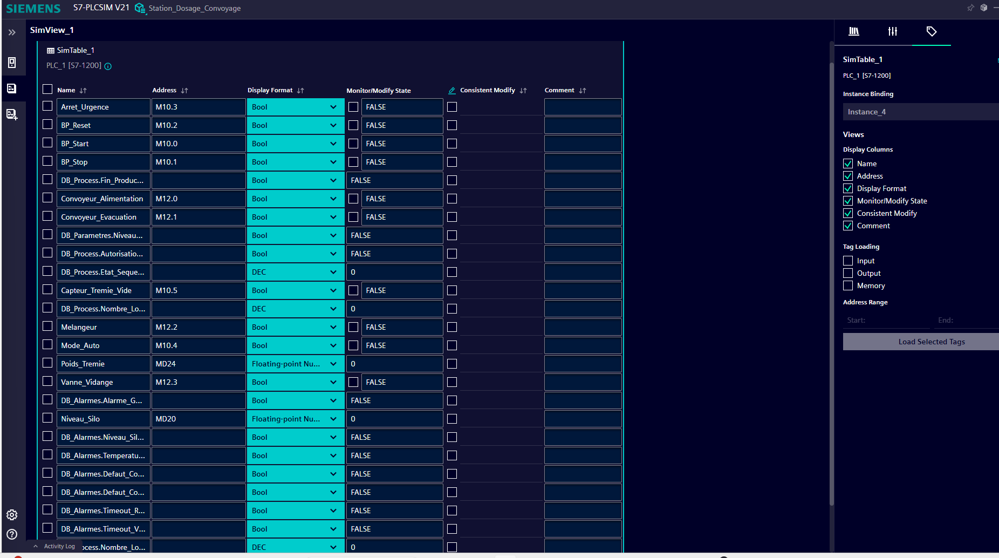
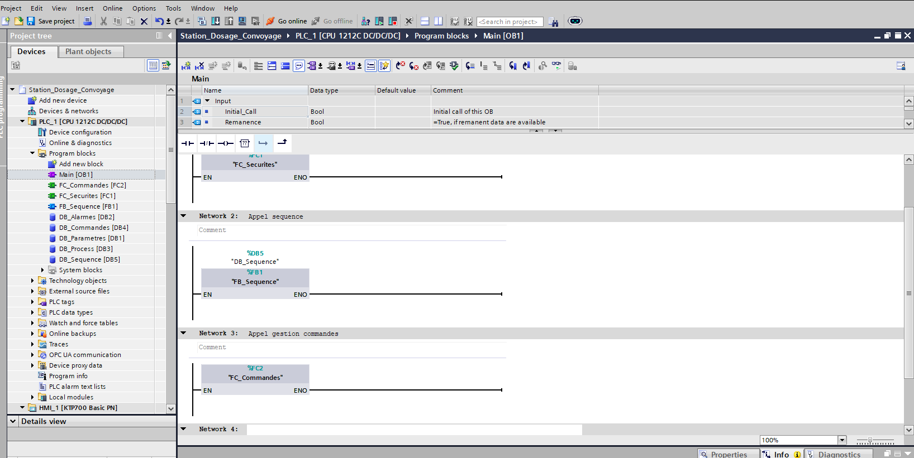
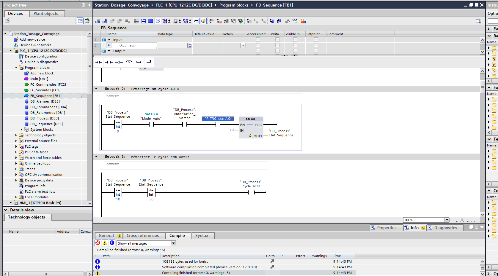
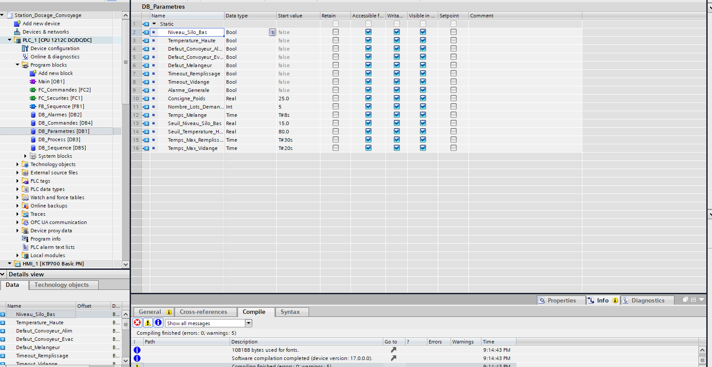

Commandes opérateur
La vue principale comporte START, STOP, AUTO et RESET, ainsi qu’un accès aux alarmes et aux paramètres.
Projet personnel · Automatisme · 2026
Développement d’une station de préparation de matière par lots : programmation d’un automate Siemens S7-1200 sous TIA Portal, conception de la supervision WinCC et simulation sous S7-PLCSIM.

01 — Procédé
La matière quitte le silo et rejoint une trémie de pesage par le convoyeur d’alimentation. Après le dosage, elle passe par le mélange, la vidange et l’évacuation. L’opérateur suit l’avancement du cycle depuis l’écran WinCC.
La vue principale comporte START, STOP, AUTO et RESET, ainsi qu’un accès aux alarmes et aux paramètres.
L’IHM affiche l’état de la séquence, le poids de la trémie, le niveau du silo et le nombre de lots réalisés.
02 — Programme automate
Dans Main [OB1], les blocs sont appelés dans cet ordre : FC_Securites [FC1], FB_Sequence [FB1] avec son DB d’instance DB_Sequence [DB5], puis FC_Commandes [FC2].
FC_Securites regroupe la logique de sécurité avant l’exécution de la séquence et des commandes.
FB_Sequence organise le cycle automatique. Le réseau présenté fait passer Etat_Sequence de 0 à 10 lorsque le mode automatique, l’autorisation de marche et le front de démarrage sont présents.
FC_Commandes est appelé après le bloc de séquence pour gérer les commandes des équipements.
Dans le réseau visible de FB_Sequence, Cycle_Actif est activé lorsque Etat_Sequence est compris entre 10 et 50.
DB_Parametres [DB1] présente notamment une consigne de poids de 25,0, cinq lots demandés, huit secondes de mélange, trente secondes maximales pour le remplissage et vingt secondes maximales pour la vidange.
03 — Captures
Ces captures montrent la supervision, la table de simulation et l’organisation du programme. Cliquez sur une image pour l’ouvrir en grand.




04 — Démonstrations vidéo
Les vidéos présentent les trois aspects complémentaires du projet : l’interface opérateur, le programme automate et la simulation.
Bilan
Ce projet personnel relie la programmation d’une séquence par états, la structuration des données du procédé et la supervision WinCC. Il démontre le fonctionnement de la station dans un environnement de simulation logicielle.
Les médias présentés documentent une simulation. Une mise en service sur installation physique n’est pas documentée ici.